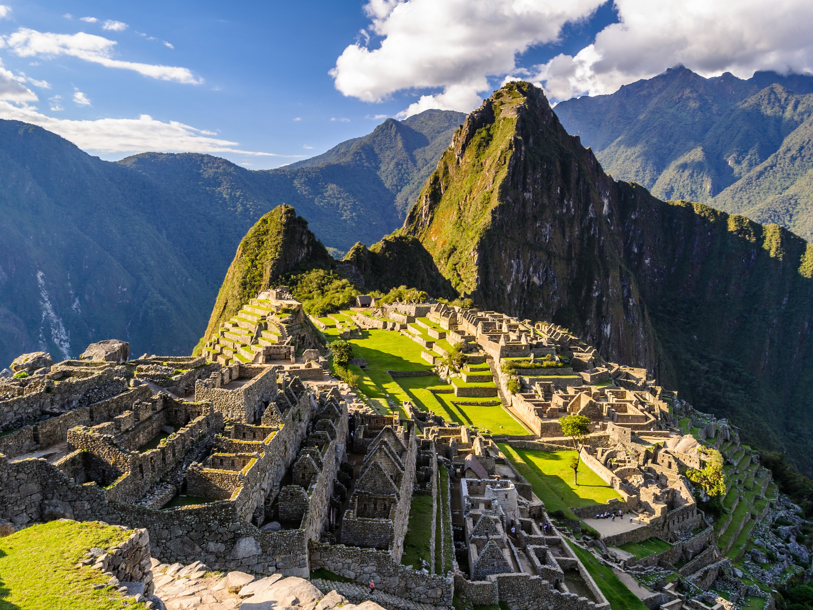

Machu Picchu

Es el nombre contemporáneo que se da a una llacta construida
antes del siglo xv, en la cordillera Oriental del sur del Perú,
en la cadena montañosa de los Andes a 2430 metros sobre el nivel del mar.
? Está en el departamento del Cusco (provincia de Urubamba, distrito de Machupicchu)
sobre el Valle Sagrado de los Incas,5?6?7? a 80 kilómetros al noroeste del Cusco,
ciudad del Perú y por donde fluye el río Urubamba,8?9? río que atraviesa
la cordillera y origina un cañón con clima de montaña tropical.